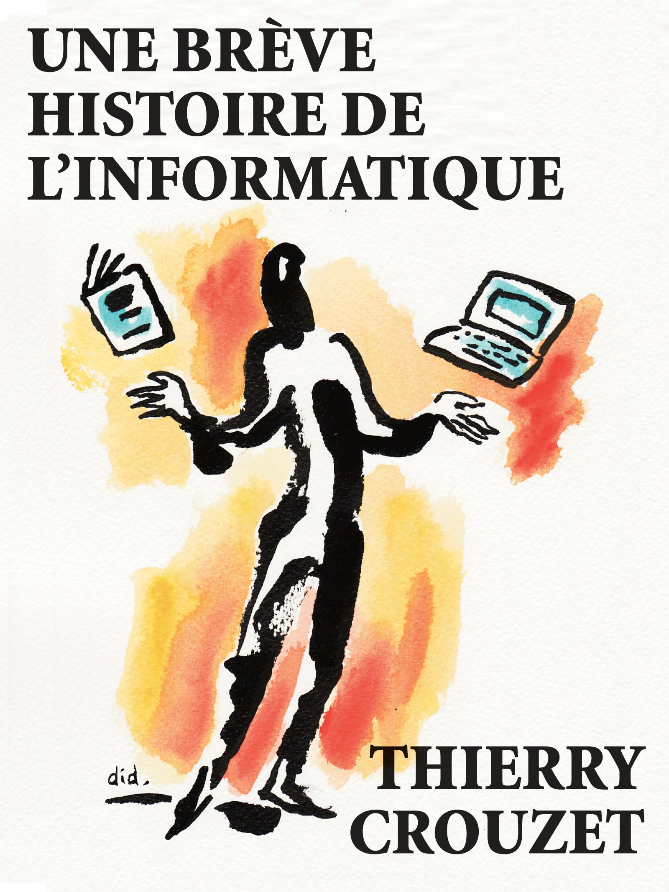

Sporification de la pensée
Ça, c’est un titre, digne d’un enflamment lyrique. Ben, non, ce sera juste un pétard mouillé. Je continue juste à encapsuler des bouts de textes dans les ebooks et de les diffuser en libraires.
Après Les crapauds fous et Le monde du i, je remets à disposition Une brève histoire de l’informatique. Encore un projet commencé, mais pas assez bourré d’énergie interne pour dépasser les difficultés dressées devant lui. Et puis j’aime bien les débuts d’aventures, les débuts de livre, presque toujours mieux réussis que les fins. À moins qu’elles ne soient écrites au début, que tout tende vers elles, comme chez Proust.

Une brève histoire de l'informatique
Suite | 2014 | Sommaire | Texte publié vendredi 31 janvier 2014